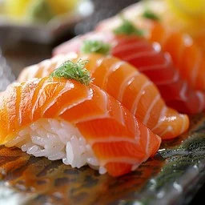

SUSHI

DESCRIPTION
There ain't much I like better than some fresh pinche salmon on the plato con nada mas pero un poquito wasabi y unos arroz.
This fresco ass meal will make you glad you learned to try new things in the 4th grade mijo!
INGREDIENTS
- Some firme ass meat of your choosing. We recommened freshly caught salmon, bluefin tuna, or escolar
- Freshly made steamed rice; DONT dry the rice out.
- Small ass sampling of wasabi, with soy sauce on the side to taste.
STEPS
- Simple marination of the meat in vinegar and lemon to kill any bacteria.
- Stack the rice down and then the pescado on top
- Plate aesthetically and prepare for a taste sensation that you aint ever gonna forget.